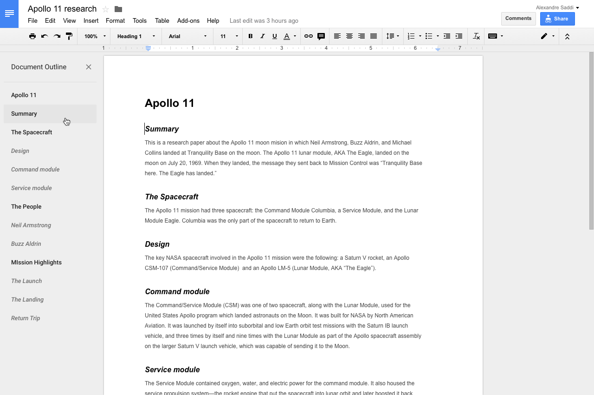
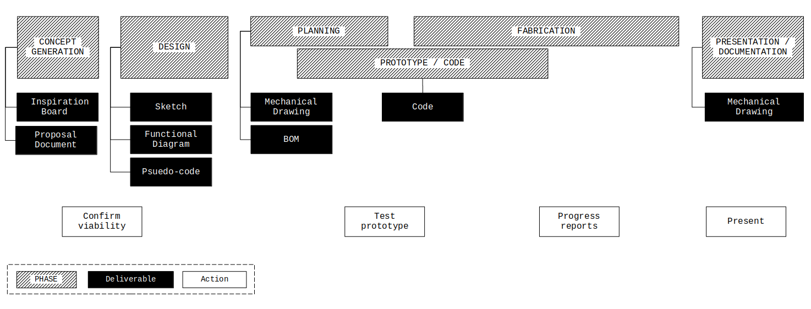

Emergent Object
Project Overview
You will design and fabricate an electronic object with a programmed user interface.
A complete submission encompasses the following aspects:
- The realization of the design as envisioned
- The success of the user interface and functionality of the object.
- The aesthetic presentation of the object.
- The documentation of the creative process and the final product.
This document describes the process and the first two deliverables required for the Emergent Objects project. Further deliverable descriptions will be appended here.
Link to github repository
Link to html version
Link to PDF version
To do list
- ▢ Inspiration Board (described here)
- ▢ Proposal Document (described here)
- ▢ Sketch
- ▢ Functional Diagram
- ▢ Psuedo-code
- ▢ Mechanical Drawing
- ▢ Bill of Materials
- ▢ Code
- ▢ Documentation post (Learning Portfolio)

Proposal Document
Create a single page document describing what you will make.
We will use this document to customize a plan specific to your design goals.
You will post you document to Canvas but please share it me with me at churia@newschool as soon as possible.
Include:
- A working title for the object.
- A description of the object.
- A description of how the user will interact with the object.
- Any concerns you have about the creation of this object.
- Any links you have to similar works.

Inspiration Board
Create a board using Miro and layout a collection of images and links.
Use this board as a place to both, help design the look and feel of the object you want to create, and collate inspirational or similar projects that you find in your research.
You will post a link to your board to Canvas but please share a link with me at churia@newschool as soon as you have a few items inserted.
Include at least 20 images and links to at least 5 specific projects.
Pictured Miro board
Process Diagram

This diagram shows the relationship of the deliverables to the overall phases of the project. Please note that most of the deliverables take place in the beginning of the project.
Direct link to diagram
{kind=link}